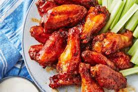
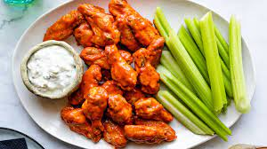
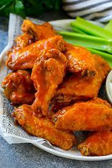

chicken-wings

Try this finger licking recipe of ours and you will surely come back for more

Description
Buffalo wings are one of the best foods to eat on earth and this coupled with an easy to make recipe will keep you going back to this finger locking good recipe every other time. Plus, it is perfect for a family gathering as they can be enjoyed by all family members
This recipe is inherited from mygreat-grandfather who was passionate about chicken and taught me to make great chicken recipes at a tender age of seven. And, buffalo wings were one of the first recipes i learnt from my dearly beloved oupa.
Ingredients
- 2 pounds (900g) chicken wings, cut into drumettes and flats
- 2 teaspoons (10g) baking powder
- 2 teaspoons (10g) kosher salt; for table salt use half as much by volume or the same weight
- 4 tablespoons (50g) unsalted butter
- 4 tablespoons (60ml) Frank's RedHot Sauce
- Blue cheese dressing, for serving
- Celery sticks, for serving
Steps
- Coat the Wings
- Coat the chicken wings with a mixture of flour, paprika, cayenne pepper, and salt
- Refrigerate coated wings for at least an hour. Make the Hot Wings Sauce
- In a saucepan on the stove, combine butter, hot sauce, pepper, and garlic
- Stir until butter is melted, then remove from heat and reserve for later
- Fry the Wings. Fry the chicken wings in a skillet filled with oil heated to 375 degrees F
- Remove the wings and place them on a paper-towel lined plate to remove the excess oil
- Coat with Hot Wings Sauce. Drizzle the hot wings sauce over the fried wings or place the hot wings in a bowl with the sauce and mix together until combined

